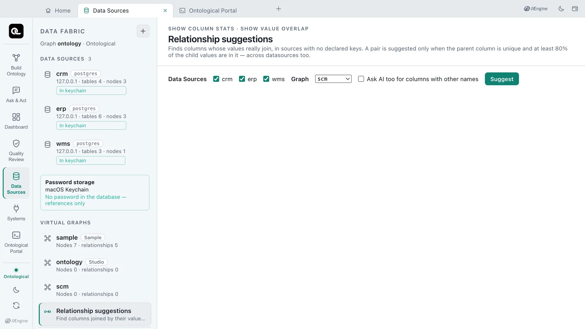
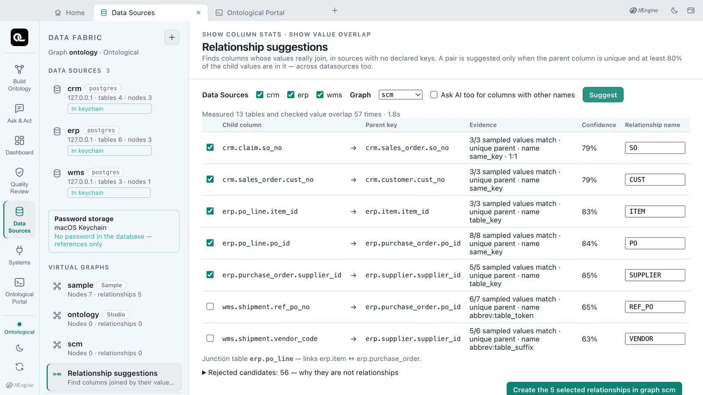
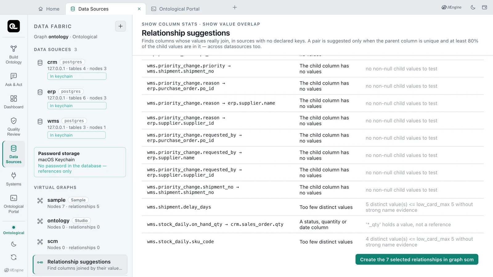
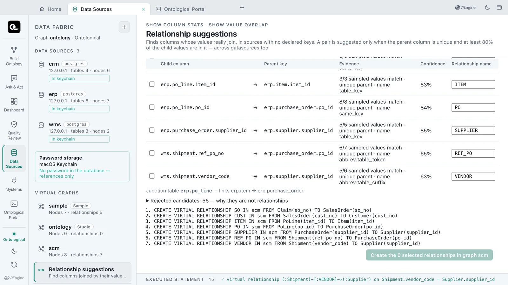
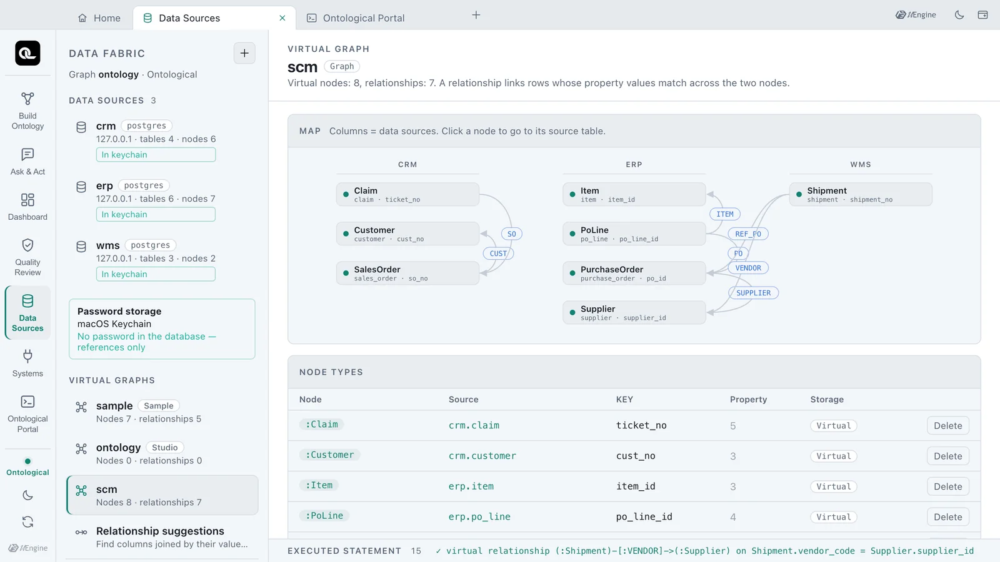
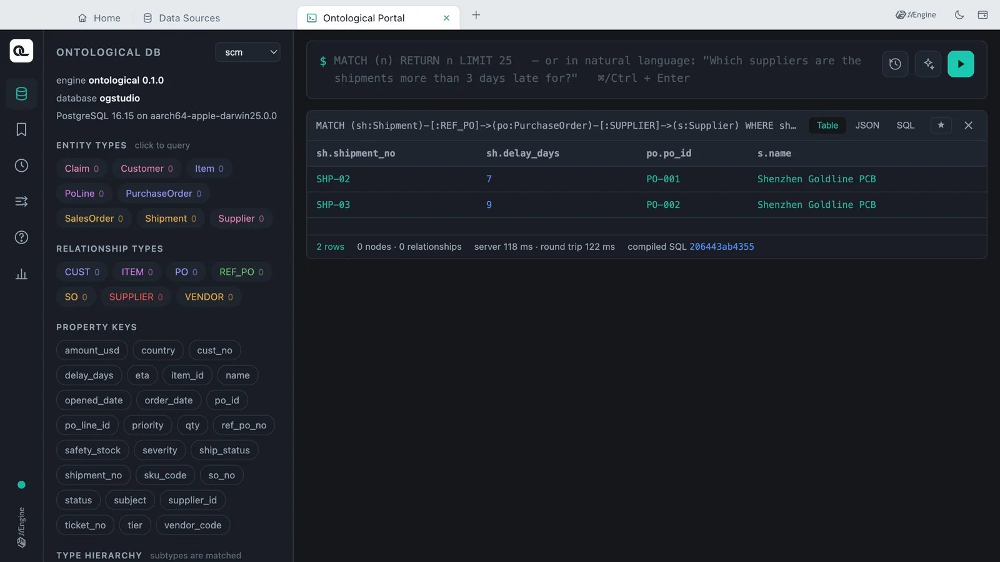

In sources with no declared (foreign) keys, find the columns whose values really join and get them suggested as virtual relationships. You get 7 relationships with their evidence from the three sample business databases, create them in a new graph, and run a query that joins two databases.
Why suggestions?#
In Chapter 6 you knew which column pointed to which (PoLine.po_id = PurchaseOrder.po_id) and made the relationships yourself. A real company's sources have hundreds of tables, foreign keys are often not declared, and every system names things its own way. The same purchase order number is po_id in the ERP and ref_po_no in the WMS.
Relationship suggestions measures values, not just names, to find the columns that join, and shows the evidence for each judgement. It works across datasources too.
How it finds them#
The engine only measures; Studio decides which pairs are relationships. Neither statement writes to the source, and no data is copied.
SHOW COLUMN STATS FROM erp.purchase_order
SHOW VALUE OVERLAP FROM wms.shipment(ref_po_no) IN erp.purchase_order(po_id)
SHOW COLUMN STATS— for each column, over the first 1000 rows: nulls, distinct values, whether it is unique, the five most common values and a short sample.SHOW VALUE OVERLAP— of up to 200 distinct child values, how many (and what share) are in the parent column, and whether the parent values are unique.
The rules for deciding:
- The parent column must be unique, and at least 80% of the child values must be in it.
- Status, flag, quantity and date columns never become children. Even when their values overlap, such columns do not point to other rows.
- Names count as evidence too:
same_key(same name,po_id→po_id),table_key(table name + key,item_id→item.item_id), rules read through an abbreviation map (abbrev:…,po= purchase_order,vendor= supplier), and so on. - A column whose values match but whose name gives no evidence is capped at a confidence of 0.6.
For comparison, NVIDIA Auto Ontology looks for joins only within one connection, skips inference when there is no embedding key, and keeps no evidence. This feature suggests across datasources and shows the evidence for every suggestion.
Try it — an empty graph#
The sample graph sample already has relationships, so get suggestions for a new graph scm that has none. Run this statement in the portal tab (covered in detail in Chapter 7). It runs whatever graph is selected.
CREATE GRAPH scm
Try it — getting suggestions#
- Open the Data Sources tab. If it was already open, close it and open it again so that
scmappears in the graph list. - Click Relationship suggestions at the bottom left.
- Check that the datasources
crm,erpandwmsare all ticked, and choosescmas the graph. - Leave Ask AI too for columns with other names off and click Suggest. The rules alone decide.

In our test it measured 13 tables and checked value overlap 57 times in one to two seconds (1.0–1.8 s), and suggested 7 relationships.

| Name | Child → parent | Matched | Name rule | Confidence |
|---|---|---|---|---|
SO |
crm.claim.so_no→ crm.sales_order.so_no |
3/3 | same_key · 1:1 | 79% |
CUST |
crm.sales_order.cust_no→ crm.customer.cust_no |
3/3 | same_key | 79% |
ITEM |
erp.po_line.item_id→ erp.item.item_id |
3/3 | table_key | 83% |
PO |
erp.po_line.po_id→ erp.purchase_order.po_id |
8/8 | same_key | 84% |
SUPPLIER |
erp.purchase_order.supplier_id→ erp.supplier.supplier_id |
5/5 | table_key | 85% |
REF_PO |
wms.shipment.ref_po_no→ erp.purchase_order.po_id |
6/7 | abbrev:table_token | 65% |
VENDOR |
wms.shipment.vendor_code→ erp.supplier.supplier_id |
5/6 | abbrev:table_suffix | 63% |
All seven have a unique parent key (unique parent on screen). The last two are references across databases and under other names: WMS shipments point to ERP purchase orders and suppliers. Below the table, it also notes that erp.po_line is a junction table linking items and purchase orders.
How confidence is computed
confidence = (0.5 + 0.5 × name score) × match ratio × sample support, where sample support = 0.8 + 0.2 × min(1, sampled / 20). REF_PO has the abbreviation rule's name score 0.75, a match ratio of 6/7 = 0.857 and 7 sampled values, so (0.875) × 0.857 × 0.87 ≈ 0.65. Fewer samples and less similar names lower it.
Reading the rejected candidates#
Open Rejected candidates: 56 — why they are not relationships to see the pairs that were measured but not suggested, with the reason for each.

| Candidate | Reason |
|---|---|
erp.po_line.qty → crm.sales_order.qty |
A status, quantity or date column — a quantity is a value, not a reference |
erp.supplier.country → crm.customer.country |
Values do not overlap enough — 1/3 = 0.33 |
crm.sales_order.sku_code |
Too few distinct values — only 3, and weak name evidence |
wms.priority_change.reason → … and others |
The child column has no values — tables where actions leave records, still empty |
In the sample graph crm.sales_order.sku_code is linked to items by FOR_ITEM, but with only 3 distinct values the rules could not be sure. A relationship like that is made by a person, as in Chapter 6. Suggestions do not replace your judgement; they narrow the candidates down and attach the evidence.
Try it — creating the chosen relationships#
- Tick
REF_POandVENDOR, which are not ticked. If you read the evidence and agree, a confidence below 70% is fine. - To rename a relationship, edit the box on the right. Here, leave them as they are.
- Click Create the 7 selected relationships in graph scm.
If the graph has no virtual node reading a table at either end, that node is made first (a parent keyed on its parent column), then the relationship. The relationship statements that ran are listed below in order.

CREATE VIRTUAL RELATIONSHIP REF_PO IN scm FROM Shipment(ref_po_no) TO PurchaseOrder(po_id)
CREATE VIRTUAL RELATIONSHIP VENDOR IN scm FROM Shipment(vendor_code) TO Supplier(supplier_id)
Click scm under the virtual graphs on the left to see 8 virtual nodes and 7 relationships, grouped by datasource.

Using it right away#
In the portal, choose the graph scm and follow the suggested relationships from a WMS shipment to the ERP purchase order and supplier.
MATCH (sh:Shipment)-[:REF_PO]->(po:PurchaseOrder)-[:SUPPLIER]->(s:Supplier)
WHERE sh.delay_days > 3
RETURN sh.shipment_no, sh.delay_days, po.po_id, s.name
| sh.shipment_no | sh.delay_days | po.po_id | s.name |
|---|---|---|---|
| SHP-02 | 7 | PO-001 | Shenzhen Goldline PCB |
| SHP-03 | 9 | PO-002 | Shenzhen Goldline PCB |

It is the same answer you got in the sample graph sample through the relationships people made (SHIPS, ORDERED_FROM). You got the same graph without writing a single relationship yourself.
Check yourself
- Why was
erp.supplier.country → crm.customer.countrynot suggested? - Why is the confidence of
wms.shipment.ref_po_no → erp.purchase_order.po_id(65%) lower than the other suggestions? - Is anything written to the source databases while suggestions are made? Is any data copied?
Show answers
- Only 1/3 = 0.33 of the child values are in the parent, below the 0.8 threshold (Values do not overlap enough). Country names are values that show up in many tables, not references.
- The names are not the same and match only through the abbreviation rule (
po= purchase_order), so the name score is 0.75; only 6 of 7 sampled values matched (0.857); and the small sample lowers the support. Below 70%, it is not ticked in advance — a person reads the evidence and decides. - No.
SHOW COLUMN STATSandSHOW VALUE OVERLAPonly read, and measure only a sample: the first 1000 rows and up to 200 distinct values. The virtual relationships made are join rules; no data is copied.